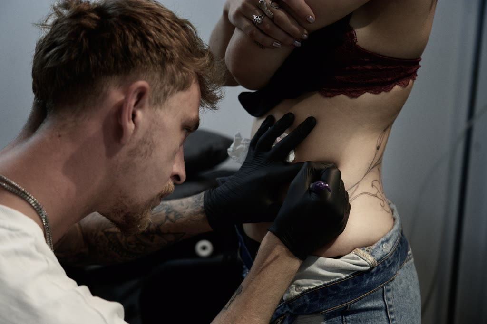
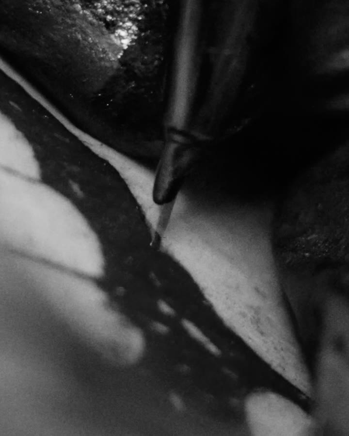

Tattoostudio
Rheine · 52°17′N
Studio No. 01 / Seit 2022
The Masterof Ink
The Master of Ink, Rheine
Nicht irgendein Motiv.
Dein Stück.
Wir verstehen Tätowieren nicht als Auswahl aus einem Katalog. Jede Arbeit beginnt mit Zuhören — und mit der Frage, was wirklich zu dir gehört.
Im Studio entstehen Entwurf, Platzierung und Ausführung als ein zusammenhängender Prozess. Ohne Laufkundschaft, ohne Produktionsdruck, mit Zeit für eine ehrliche Entscheidung.

Gearbeitet wird auf der Anatomie, nicht auf einem Blatt Papier: Die Linie entsteht dort, wo sie später sitzt — der Körper gibt Richtung und Maß vor, nicht die Vorlage.
Sebastian bei der Arbeit / Rheine„Ein Tattoo wird nicht auf den Körper gesetzt. Es wird für ihn komponiert.“
Von der Idee bis zur verheilten Arbeit
Drei Schritte.
Ein Prozess.
Vertrauen entsteht nicht in einem einzelnen Moment. Es wächst entlang einer klaren Linie — vom ersten Zuhören bis zur persönlichen Begleitung danach.

Präzision ist kein Stilmittel. Sie ist die Grundlage.
-
Zuhören
Du schickst uns deine Idee, die gewünschte Stelle und das, was hinter dem Motiv steckt. Wir prüfen persönlich und ehrlich, ob das Projekt zu uns passt.
-
Klären & Komponieren
Im Gespräch klären wir Richtung, Größe, Platzierung und Machbarkeit — in ruhiger Atmosphäre und ohne Zeitdruck. Daraus entsteht der Entwurf für deinen Körper: einmal gezeichnet, einmal tätowiert. Proportion, Bewegung und persönliche Bedeutung werden zu einer Einheit.
-
Tätowieren & Begleiten
Dein Termin gehört dir. Danach bleiben wir mit klaren Pflegehinweisen und persönlicher Erreichbarkeit an deiner Seite, bis die Arbeit sauber verheilt ist.
Portfolio / Studio
Ausgewählte
Arbeiten.
Artists at The Master of Ink
Das Team
Ein wachsendes Studioverzeichnis. Jeder Artist mit eigener Handschrift, eigener Auswahl und einem gemeinsamen Anspruch.
Nicht die Menge entscheidet.
Sondern ob eine Arbeit hängen bleibt.
Dein Projekt
Lass uns
darüber sprechen.
Ein Fragment einer Idee genügt. Schreib uns, was du vorhast — wir melden uns persönlich und sagen dir ehrlich, ob und wie wir es umsetzen können.
Angekommen.
Danke dir. Deine Anfrage liegt jetzt bei uns — du hörst innerhalb von drei Werktagen persönlich von uns.
Du kannst deine Anfrage noch in Ruhe ergänzen — Referenzen, Größe, Wunschtermin:
Angaben ergänzen ↗